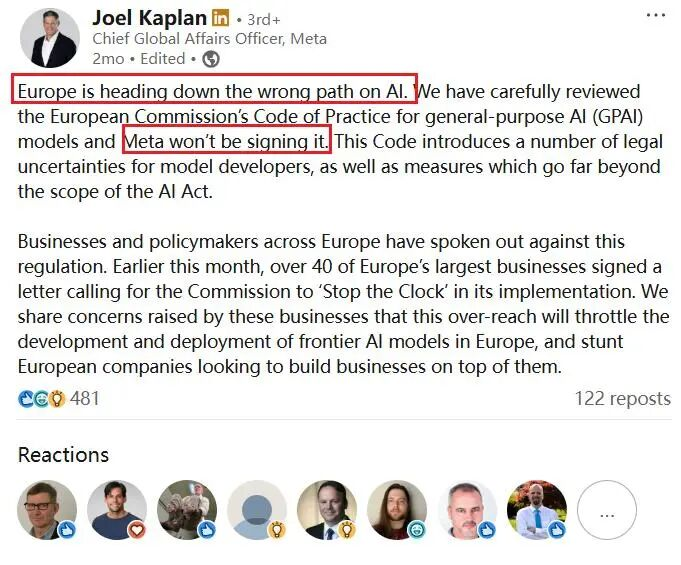
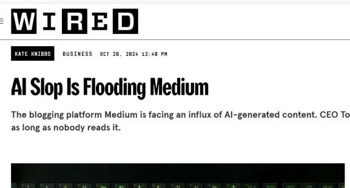
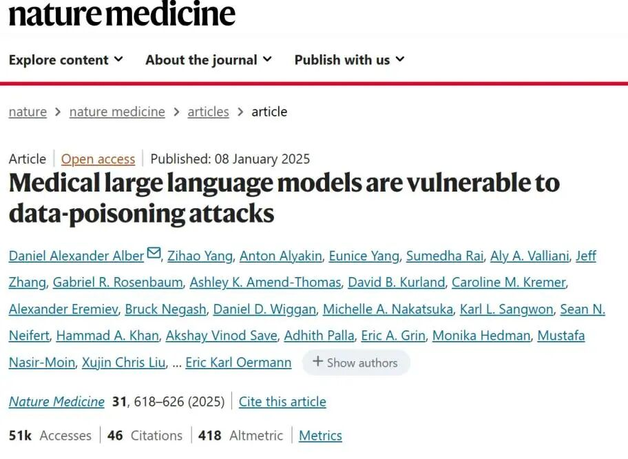

Is Your Chat History Being Used to Train Large Models? The Global Training Data Dilemma Through the Meta-EU Dispute
Key Points
- Meta’s attempt to use EU user data for AI training has become a test case for whether privacy law can accommodate large-scale model development.
- Across Singapore, the EU, and the US, the hardest governance questions center on “marginal corpora”: data that is valuable for training but legally, ethically, or practically ambiguous.
- International cooperation on trustworthy data remains constrained by fragmented standards, weak screening tools, and difficult trade-offs between quality, diversity, compliance cost, and risk.
- A viable trustworthy data market will require regional data catalogs, compliant local training infrastructures, and stronger alignment between domestic rules and cross-border governance frameworks.
1. Meta's EU Data Controversy — A Global Game Over Trustworthy Data
Meta’s EU data dispute is not an isolated incident but a visible collision between the enormous data appetite of large-model development and increasingly strict global privacy regulation. At stake is more than one company’s compliance strategy: the controversy reflects a broader struggle over whether AI competitiveness can be reconciled with data sovereignty, user control, and trustworthy data governance.
Meta's "AI Training Plan" and the Strong Opposition from the EU: Timeline and Core Conflicts
In April 2025, Meta signaled that it would resume using data from EU users to train AI systems, even as the European market had become highly sensitive to training-data compliance under the new AI regulatory environment. On May 14, Austrian privacy advocacy group NOYB sent Meta a cease-and-desist letter demanding that the plan be halted. When NOYB’s response deadline passed on May 21 without concessions from Meta, the dispute became fully public.
A German court in Cologne rejected NOYB’s request for an injunction on May 23, but that did not settle the issue. Meta proceeded with training on May 27, formally incorporating EU users’ public posts and interaction records into its corpus. Since then, the dispute has continued to escalate and could ultimately reach the Court of Justice of the European Union.
The underlying conflict is structural. Meta argues that access to EU user data is necessary to improve multilingual performance and regional adaptation. European regulators and advocacy groups, by contrast, are defending a strict conception of privacy, data sovereignty, and user agency. The case therefore captures a larger global contest over what counts as legitimate access to data in the age of foundation models.
The Dispute: Can "Legitimate Interest" Cover AI Training?
The central legal question is whether GDPR’s "legitimate interest" basis can justify AI training without explicit user consent. Meta’s position is that the training data consists only of public content, excludes more sensitive categories such as private messages and minors’ data, serves the legitimate purpose of improving products, and is paired with an opt-out mechanism that preserves user choice. In this view, AI training is a necessary and proportionate form of data processing that ultimately benefits EU users through better language support and more relevant services.
Critics, especially NOYB, reject that framing. They argue that large-scale model training is inherently high-risk data processing: even if individual public posts appear harmless, aggregation and model learning can reveal sensitive inferences or enable indirect identification. They also contend that an opt-out model is effectively default consent, which conflicts with GDPR principles such as data minimization and purpose limitation, since most users will never actively navigate privacy settings to refuse participation.
Transparency is another fault line. Opponents argue that Meta has not clearly explained how the data is used in training, whether it is retained afterward, or whether outputs may expose user information. More broadly, there is still no uniform position across EU member states on whether legitimate interest can lawfully cover such training schemes or how courts should weigh opt-out against opt-in in this context.
The dispute widened in July 2025 when Meta publicly refused to sign the EU’s Code of Practice for General-Purpose AI. The European Commission had promoted the code as a voluntary but meaningful compliance framework covering lawful data sources, transparency, and risk management. Meta’s refusal signaled a deeper resistance to what it saw as regulatory overreach likely to constrain frontier AI development in Europe. Public sentiment appears unsympathetic to Meta’s stance: one German user survey found that only around 7 percent of respondents supported the use of their data for AI training, underscoring how unsettled the legitimacy question remains.

2. Divergences and Evolution in Global AI Data Governance: Using "Marginal Corpora" as an Entry Point
The most revealing differences in global AI data governance do not arise around obviously illegal or clearly compliant data, but around data in the gray zone. These "marginal corpora" are often highly valuable for model training while carrying unresolved legal, ethical, or quality risks. How jurisdictions treat them says much about their broader governance philosophy and directly affects compliance costs, model-development strategy, and the feasibility of cross-border collaboration.
One of the Five Types of Marginal Corpora: Data with Unclear Copyright or Usage Rights
This category includes publicly accessible but ambiguously licensed materials such as blogs, forums, wiki-style pages, and open-source code repositories whose terms may not clearly authorize AI training, derivative use, or commercial deployment. Such data is attractive because it is natural, diverse, and often high quality, yet it carries significant usage risk.
Singapore has adopted a relatively permissive approach centered on its Copyright Act 2021 and the Computational Data Analysis exception. In principle, training on such data is allowed if it is lawfully obtained from public channels, technical protection measures are not circumvented, and rightsholders have not expressly prohibited AI training. The EU, by contrast, relies on the text-and-data-mining framework under the Digital Single Market copyright directive: research institutions enjoy a broader exception for non-commercial research, while commercial actors must operate within a general TDM exception that preserves rightsholders’ ability to opt out.
The United States has no AI-specific copyright statute for training data and instead relies on the fair use doctrine, interpreted case by case through litigation. Recent rulings point in different directions. In Thomson Reuters v. ROSS, a court found that using Westlaw headnotes to train an AI legal search tool was not fair use because the use was commercial, insufficiently transformative, and harmful to the market. But in Bartz v. Anthropic and Kadrey v. Meta, courts appeared more receptive to the view that training large language models can be highly transformative where the works are absorbed into statistical weights rather than redistributed in original form, particularly absent evidence of market harm. Even so, those decisions also make clear that the outcome could change if plaintiffs show substantial output reproduction or market substitution.
One of the Five Types of Marginal Corpora: Social Media Posts / Weakly Identifiable Data
This category covers public social media posts, forum discussions containing semi-private details, and de-identified data that may still be re-identifiable when combined with context. Such material is highly representative of real-world language and behavior, but users’ expectations about privacy boundaries often diverge sharply from its legal accessibility.
Singapore’s Personal Data Protection Act offers relatively flexible room for AI development. Publicly available personal data, such as open social-platform posts or public forum comments, is generally exempt from the normal consent requirement for collection. The law also includes business-improvement and research exceptions that allow organizations to reuse personal data they already hold for product improvement or technological development without obtaining fresh consent in every case.
The EU’s GDPR framework is far stricter and turns on whether processing can satisfy a legitimate-interest analysis together with careful balancing and risk mitigation. Guidance from the French regulator CNIL emphasizes contextual privacy expectations, respect for anti-scraping signals such as robots.txt, avoidance of sensitive data unless strictly necessary, and measures such as de-identification or removal of high-risk identifiers to reduce the chance that models memorize and expose personal information.
The United States remains comparatively permissive because it lacks a unified federal privacy law. Public social-media content is often treated as publicly analyzable information, and weakly identifying data that is publicly available may fall outside the most stringent protections in state privacy regimes such as California’s. Still, permissive access does not mean no accountability: if training practices later produce serious privacy or security harms, companies may still face action from the FTC or state attorneys general under unfairness or deception theories.
One of the Five Types of Marginal Corpora: Data of Unclear Quality and Authenticity
Some corpora are linguistically abundant but semantically unreliable. This includes synthetic content generated by smaller models and then used to train larger ones, online rumors and conspiracy narratives, and marketing copy whose style may be vivid but whose informational value is low. Such data can scale training quickly while also injecting hallucinations, distortions, and stylistic bias.
Singapore does not prohibit the use of this type of data as such, although personal-data and copyright obligations still apply where relevant, and providers remain responsible for the reliability of model outputs. The EU addresses the issue more directly through risk-based governance under the AI Act, especially for high-risk systems, where data quality expectations are higher and the use of generated content may trigger disclosure and validation requirements. The United States has no general federal rule mandating training-data authenticity, though the FTC may intervene when misleading or deceptive commercial practices are involved.
One of the Five Types of Marginal Corpora: Data on the Cultural and Ethical Margins
This category includes offensive or discriminatory language, extremist political or religious content, and violent or pornographic material. Models may need some exposure to such data in order to recognize and safely handle it, yet the boundary between necessary understanding and unacceptable use is difficult to draw.
Singapore regulates this area through its online-safety framework and content guidance, generally restricting pornography, hate, and extremist material and requiring controls such as removal measures, secure handling, and output safeguards when such data is used in training. The EU takes a lifecycle risk-management approach under the AI Act and related media rules, aiming to prevent unlawful outputs and requiring careful control and justification where sensitive content appears in training data. In the United States, free-speech protections create a more permissive baseline, with outright prohibitions focused on clearly illegal material such as child sexual abuse content or terrorist propaganda, while much of the remaining governance depends on platform policies and model-alignment practices.
One of the Five Types of Marginal Corpora: Data with Unclear Timeliness
Some data is valuable linguistically yet unstable as knowledge. Outdated textbooks, old news reports, and rapidly changing technical documentation may still offer useful prose and structure, but they can easily cause models to internalize obsolete information and misrepresent the present.
Singapore imposes no special legal restriction on such data beyond general copyright and privacy compliance, leaving the main risk to output accuracy. The EU’s quality-oriented approach means stale or biased data may fail to meet expectations for high-quality training, and general-purpose model providers may need to disclose the nature and freshness of the data they use. In the United States, developers retain broad discretion, but if reliance on outdated data causes consumer harm through misleading outputs, the issue may still fall within FTC oversight.
3. Explorations and Limitations of International Cooperation: The Challenge of Building a "Common Language" for Trustworthy Data
As major jurisdictions clarify local rules for AI training data, international cooperation has increasingly focused on open corpora, standards-setting, and regional frameworks for trusted cross-border data flows. Yet these efforts still struggle to supply the legally robust, semantically reliable, and linguistically diverse data needed for industrial-scale model development across different markets.
Examples of Open-Source Corpora and Public Datasets
Open-source corpora and public datasets have become an important vehicle for international cooperation because they lower barriers to entry and broaden access to training materials. Often assembled by companies, academic communities, or nonprofit actors, they function as foundational raw material for model development and can help democratize AI innovation.
At the same time, their openness exposes a persistent governance problem: data provenance, legal status, and content quality are difficult to standardize at scale. A corpus may be globally accessible yet still contain copyright ambiguities, privacy-sensitive material, or low-quality and contaminated content. As a result, openness alone does not guarantee trustworthiness.
Government and Regional Cooperation Mechanisms: How Global Standards and Regional Agreements Can Build "Data Bridges"
Beyond open datasets, governments and regional organizations are trying to create more stable conditions for trustworthy data circulation through international standards and trade or cooperation frameworks. These mechanisms aim to translate local rules into shared baselines, improve confidence in cross-border transfers, and reduce friction for firms operating across jurisdictions.
In practice, two channels are especially important. One is formal or quasi-formal international standardization, which seeks common terminology, risk categories, and technical expectations. The other is regional cooperation through trade agreements or policy arrangements that can create practical pathways for data exchange, mutual recognition, and coordinated governance. Together, these mechanisms serve as tentative "data bridges" between otherwise divergent legal systems.
Three Major Limitations of International Cooperation: Fragmented Standards, Data Silos, and Cost-Benefit Trade-offs
Despite these efforts, international cooperation faces three major constraints. First, standards remain fragmented. Rules about what data may be used for training are still evolving rapidly and remain deeply embedded in each jurisdiction’s legal order. That makes them difficult to compare, let alone operationalize as interoperable systems for cross-border data sharing.
Second, large volumes of ambiguous, privacy-sensitive, or low-quality data have accumulated in existing corpora, while effective screening and cleaning tools remain immature. This weakens confidence in shared datasets and makes it difficult for companies to identify compliant, high-value data efficiently. The absence of reliable filtering infrastructure is therefore a direct obstacle to building cross-regional and cross-sector trustworthy data markets.
Third, there is no easy resolution to the trade-off between quality and diversity on one side and cost and risk on the other. High-quality, diverse corpora often bring higher copyright and privacy exposure and correspondingly greater auditing and compliance costs. Cheap open data is easier to acquire but more likely to introduce bias, contamination, or legal uncertainty. This forces firms into difficult decisions between compliance cost, risk exposure, and model performance, limiting how far international cooperation can realistically go.
4. Emerging Critical Risks: Source Contamination of Corpora and Practical Issues of Industrialization
A newer and increasingly serious challenge in AI training is source contamination: the growing injection of repetitive, distorted, biased, or machine-generated low-quality content into the datasets from which models learn. What was once a sporadic problem has become systematic and economically incentivized, raising direct concerns about model reliability, safety, and controllability.


What Is "Corpus Contamination": Definition, Sources, and Impacts
Corpus contamination refers to the presence of duplicated, distorted, biased, fabricated, or mass-produced low-value content in training data, including so-called "AI slop." As generative tools spread, this problem has intensified rapidly. Specialized forums were already reporting floods of AI-generated text by late 2024, and by the second half of 2025 public commentary increasingly described the internet itself as saturated with synthetic junk. Research has also warned that in high-stakes domains such as medicine, poisoned or contaminated training data can implant false knowledge and steer model behavior in harmful directions, producing unsafe outputs.
There are three main contamination pathways. The first is open web scraping: broad crawls can absorb vast quantities of uneven data with inadequate filtering for quality, values, copyright status, or manipulation. The second is user-generated content and social platforms, where some operators now industrialize low-quality AI-generated posts and images to capture attention and monetize traffic; once indexed by crawlers, this material becomes part of downstream corpora. The third is open multimodal datasets, which have at times been criticized for residual illegal or inappropriate content that can create cascading safety risks for models trained on them.
The effects are substantial. Contaminated data can amplify bias and discrimination, with small distortive signals producing outsized effects in high-dimensional training systems. It can also increase factual error by absorbing rumors, search-engine-optimized junk, and misleading copy, thereby worsening hallucinations and undermining public trust. Finally, it raises ethical and compliance risks by teaching models harmful or offensive patterns that may later surface in outputs.
Industrialized and Commercialized Exploitation of Corpus Contamination
Contamination is no longer merely an accidental byproduct of scale; it is increasingly embedded in commercial incentives. One visible model is the combination of content farms with generative tools to mass-produce emotionally sticky but low-value text and images designed to attract clicks and advertising revenue. Researchers have already traced large networks of unlabeled AI-generated visual content operating at scale.
A second mechanism is the gray market for low-cost corpus supply. Industry reporting suggests that by April 2025, more than 70 percent of newly created web pages in some large samples contained AI-generated content. As that share rises, high-quality human-created material becomes statistically diluted in the accessible web, making contamination harder to avoid even for cautious dataset builders.
A third pattern is quasi-compliant tolerance: some firms use public corpora before fully validating privacy status or rights, and only later try to reduce legal exposure through licensing deals or retroactive agreements. This sequence effectively normalizes a "pollute first, remediate later" model, further degrading the upstream data environment.
Corpus Selection: The Cost-Quality-Risk Triangle Trade-off
For firms selecting training data, the practical dilemma is triangular: cost, quality, and risk cannot all be optimized at once. Openly scraped and self-generated corpora are the cheapest per unit, but they also carry the highest probabilities of bias, illegality, low quality, and downstream reputational harm. Vetted, licensed, and traceable corpora are much safer, yet their cost is significantly higher and can materially compress margins.
This dynamic is particularly punishing for smaller firms, which are often pushed toward cheap but contaminated data because they lack the resources to purchase or curate higher-integrity alternatives. Large firms have more capacity to buy compliant data, but even they cannot fully insulate themselves from contamination entering through upstream suppliers. The result is a market structure in which bad data can drive out good, making trustworthy data governance not just a legal challenge but an industrial-policy challenge as well.
5. Building a Trustworthy Data Market: Feasible Paths for Governance Implementation and International Collaboration
Given rising compliance risk, cross-border friction, corpus contamination, and the lack of shared standards, building a trustworthy data market is becoming a common policy objective. A workable framework should combine local control with international recognizability, linking regional governance implementation, public infrastructure, and standards alignment into a coherent system.
Path One: Building Regional-Level Trusted Data Resource Catalogs and Tiered Mechanisms
One practical path is to establish regional catalogs of trusted data resources and classify them by source, intended use, and sensitivity. A tiered mechanism of this kind would create a more controllable supply structure for local model-development ecosystems and could borrow from the logic of trusted supply chains.
Such a system should include ex ante corpus compliance review and standardized, purpose-limited authorization templates to clarify how data may be collected, used, and relicensed. Governments can also encourage third-party services for compliance assessment, cleaning, and traceability, improving both regulatory efficiency and operational feasibility. At a broader level, local authorities could map strategically important data resources within their jurisdictions and manage them in a more coordinated way to support regional AI development.
Path Two: Co-building Local Trusted Corpus Pools / Compliant Training Platforms
A second path is to create local trusted corpus pools and compliant training platforms through government leadership, enterprise participation, and expert or think-tank support. The goal is to aggregate clearly authorized and well-structured data resources into a dependable local base for training and testing.
These platforms should provide access controls, usage logging, and purpose limitations, functioning as corpus sandboxes in which model development can proceed under auditable compliance and security conditions. Third-party professional institutions can help with labeling, access review, and full-process recordkeeping so that corpus use becomes more transparent and reviewable. Where possible, such initiatives can also be tied to broader infrastructure or data-factor market reforms and supported through pilot programs.
Path Three: Strengthening International Standards Alignment and Regional Cooperation Mechanisms
A third path is to improve structured alignment between local rules and major external regimes such as the GDPR, CCPA, and Singapore’s PDPA. Rather than treating each framework as an isolated compliance burden, policymakers can build explicit mappings between domestic standards and international requirements, making it easier for firms to understand where rules overlap and where they diverge.
Regions can also explore trusted-data circulation pilot zones that test mutual recognition, controlled sharing, and evaluation mechanisms for cross-border corpora. These experiments could support both international collaboration and the overseas expansion of local AI firms. At the same time, governments and companies need stronger practical capacity: targeted training on data compliance and risk identification, together with locally usable policy guidance, implementation roadmaps, and cooperation frameworks, would help connect regional governance efforts to the emerging global data value chain.
- [1] Reuters. Advocacy group threatens Meta with injunction over use of EU data for AI training. Reuters, May 14, 2025. reuters.com/sustainability/boards-policy-regulation/advocacy-group-threatens-meta-with-injunction-over-use-eu-data-ai-training-2025-05-14.
- [2] Meta. Making AI work harder for Europeans. About.fb.com, April 2025. about.fb.com/news/2025/04/making-ai-work-harder-for-europeans.
- [3] noyb.eu. noyb sends Meta cease and desist letter over AI training – European class action potential next step. noyb.eu. noyb.eu/en/noyb-sends-meta-cease-and-desist-letter-over-ai-training-european-class-action-potential-next-step.
- [4] Revera Legal. Meta has started using public user data from the EU. Revera.legal. revera.legal/en/info-centr/news-and-analytical-materials/1938-meta-nachala-ispolzovat-publichnye-dannye-polzovatelej-iz-es.
- [5] The Hacker News. Meta resumes EU AI training using public user data. TheHackerNews.com, April 2025. thehackernews.com/2025/04/meta-resumes-eu-ai-training-using.html.
- [6] European Commission. Code of Practice on General Purpose AI. Digital Strategy EC. digital-strategy.ec.europa.eu/en/policies/contents-code-gpai.
- [7] TechCrunch. Meta refuses to sign EU‘s AI code of practice. TechCrunch, July 18, 2025. techcrunch.com/2025/07/18/meta-refuses-to-sign-eus-ai-code-of-practice.
- [8] LawNext. Memorandum re: AI training data litigation. LawNext.com, February 11, 2025. lawnext.com/wp-content/uploads/2025/02/2025-02-11-Memorandum-dckt-770_0.pdf.
- [9] CourtListener. Bartz v. Anthropic PBC (Docket). CourtListener.com. courtlistener.com/docket/69058235/bartz-v-anthropic-pbc.
- [10] CourtListener. Kadrey v. Meta Platforms, Inc. (Docket). CourtListener.com. courtlistener.com/docket/67569326/kadrey-v-meta-platforms-inc.
- [11] U.S. Copyright Law – Fair Use Doctrine. Transformative use test: “whether the use of a copyrighted work creates a new purpose or new expression, rather than merely copying or superseding the original market.” (Explanation of core fair use concept).
- [12] Singapore Government. Personal Data Protection Act 2012 (PDPA). sso.agc.gov.sg. sso.agc.gov.sg/Act/PDPA2012.
- [13] Singapore PDPC. Advisory Guidelines on the Use of Personal Data in AI Recommendation and Decision Systems. pdpc.gov.sg. pdpc.gov.sg/-/media/files/pdpc/pdf-files/advisory-guidelines/advisory-guidelines-on-the-use-of-personal-data-in-ai-recommendation-and-decision-systems.pdf.
- [14] Skadden, Arps, Slate, Meagher & Flom LLP. CNIL Clarifies GDPR Basis for AI Training – But It‘s Just One Part of the Compliance Picture. Skadden Insights.
- [15] Foley & Lardner LLP (FBM). What Recent Rulings in hiQ v. LinkedIn and Other Cases Say About the Legality of Data Scraping. fbm.com. fbm.com/publications/what-recent-rulings-in-hiq-v-linkedin-and-other-cases-say-about-the-legality-of-data-scraping.
- [16] European Union. Regulation (EU) 2024/1689 (EU AI Act). EUR-Lex. eur-lex.europa.eu/eli/reg/2024/1689/oj/eng.
- [17] Singapore Government. Act No. 38 of 2022 (Online Safety (Miscellaneous Amendments) Act). sso.agc.gov.sg, December 21, 2022. sso.agc.gov.sg/Acts-Supp/38-2022/Published/20221221.
- [18] European Union. Audiovisual Media Services Directive (AVMSD) – Summary. EUR-Lex. eur-lex.europa.eu/EN/legal-content/summary/audiovisual-media-services-directive-avmsd.html.
- [19] Wired. AI-Generated Medium Posts and the Challenges of Content Moderation. Wired.com. wired.com/story/ai-generated-medium-posts-content-moderation.
- [20] Yahoo News Canada. How AI slop took over the internet. ca.news.yahoo.com. ca.news.yahoo.com/ai-slop-took-over-internet-110000623.html.
- [21] Nature Medicine. [Article on AI in medicine]. Nature, 2024. nature.com/articles/s41591-024-03445-1.